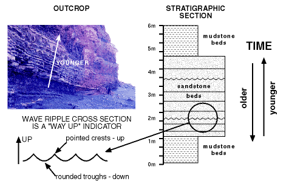
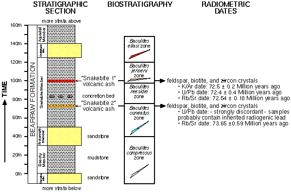
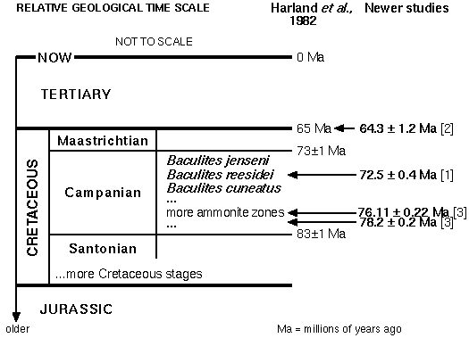
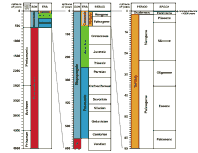

Outros Links:
|
Visão geral
- Introdução
- Contexto
- Um exemplo teórico
- Circularidade?
- Exemplos específicos: Quando a datação radiométrica "simplesmente funciona" (ou não)
- Conclusões
- Referências
- Outras fontes
- Agradecimentos
Introdução
Este documento discute a maneira como a datação radiométrica e os princípios estratigráficos são utilizados para estabelecer a escala de tempo geológica convencional. Não se trata da teoria por trás dos métodos de datação radiométrica, mas sim da sua aplicação, e portanto assume-se que o leitor já tem alguma familiaridade com a técnica (consulte "Outras Fontes" para mais informações). Como exemplo de como são utilizadas, as datas radiométricas provenientes de rochas cretáceas fósseis e geologicamente simples no oeste da América do Norte são comparadas à escala de tempo geológica. Para chegar a esse ponto, há também uma discussão histórica e descrição de métodos de datação não radiométricos.
O exemplo utilizado aqui contrasta fortemente com a maneira como os métodos convencionais de datação científica são caracterizados por alguns críticos (por exemplo, consulte a discussão em "Críticas Criacionistas Convencionais aos Métodos de Datação Mainstream" no FAQ sobre a Idade da Terra e FAQ sobre Datação por Isocronos). Uma forma comum de crítica é citar situações geologicamente complicadas onde a aplicação da datação radiométrica é muito desafiadora. Estas são frequentemente caracterizadas como a norma, em vez da exceção. Pensei que seria útil apresentar um exemplo onde a geologia é simples e, surpreendentemente, o método funciona bem, para mostrar a qualidade dos dados que teriam que ser invalidados antes que uma revisão majoritária da escala de tempo geológico pudesse ser aceita por cientistas convencionais. Os geocronólogos não afirmam que a datação radiométrica é infalível (nenhum método científico é), mas ela funciona confiavelmente para a maioria das amostras. São estas amostras altamente consistentes e confiáveis, e não as complicadas, que teriam que ser falsificadas para que as teorias de "Terra jovem" tivessem qualquer plausibilidade científica, sem mencionar a necessidade de falsificar grandes quantidades de evidência de outras técnicas.
Este documento é parcialmente baseado em uma postagem anterior composta em resposta a Ted Holden. Agradeço a ele e a outros críticos por me motivarem.
Antecedentes
Princípios Estratigráficos e Tempo Relativo
Muito da geologia da Terra consiste em camadas sucessivas de diferentes tipos de rocha, empilhadas uma sobre a outra. As rochas mais comuns observadas nesta forma são rochas sedimentares (derivadas do que anteriormente eram sedimentos) e rochas ígneas extrusivas (por exemplo, lavas, cinzas vulcânicas e outras rochas anteriormente fundidas extrudadas na superfície da Terra). As camadas de rocha são conhecidas como "estratos", e o estudo de sua sucessão é conhecido como "estratigrafia". Fundamentais para a estratigrafia são um conjunto de princípios simples, baseados em geometria elementar, observação empírica da maneira como essas rochas são depositadas hoje e na gravidade. A maioria desses princípios foi formalmente proposta por Nicolaus Steno (Niels Steensen, dinamarquês), em 1669, embora alguns tenham uma herança ainda mais antiga que se estende até os autores da Bíblia. Alguns princípios foram reconhecidos e especificados mais tarde. Um resumo inicial deles é encontrado em Princípios de Geologia, de Charles Lyell, publicado entre 1830-32, e não difere muito de uma formulação moderna:
- O princípio da sobreposição - em uma sequência vertical de rochas sedimentares ou vulcânicas, uma unidade rochosa mais alta é mais jovem do que uma mais baixa. "Para baixo" é mais antigo, "para cima" é mais jovem.
- O princípio da horizontalidade original - as camadas rochosas foram originalmente depositadas próximas à horizontalidade.
- O princípio da extensão lateral original - Uma unidade rochosa se estende lateralmente, a menos que haja uma estrutura ou mudança que impeça sua extensão.
- O princípio das relações de corte transversal - uma estrutura que corta outra é mais jovem do que a estrutura que é cortada.
- O princípio da inclusão - uma estrutura que está incluída em outra é mais antiga do que a estrutura que a inclui.
- O princípio do "uniformitarismo" - os processos que operavam no passado eram regidos pelas mesmas "leis da física" que operam hoje.
Observe que estes são princípios. De forma alguma pretendem implicar que não existem exceções. Por exemplo, o princípio da superposição baseia-se, fundamentalmente, na gravidade. Para que uma camada de material seja depositada, algo tem de estar abaixo dela para a suportar. Não pode flutuar no ar, particularmente se o material envolvido for areia, lama ou rocha fundida. O princípio da superposição tem, portanto, uma implicação clara para a idade relativa de uma sucessão vertical de estratos. Existem situações em que ele potencialmente falha -- por exemplo, em depósitos de cavernas. Nesta situação, o conteúdo da caverna é mais jovem tanto da rocha-mãe abaixo da caverna quanto do teto suspenso acima. No entanto, observe que, devido ao "princípio das relações de corte transversal", um exame cuidadoso do contato entre o preenchimento da caverna e a rocha circundante revelará as verdadeiras relações de idade relativa, assim como o "princípio da inclusão" se fragmentos da rocha circundante forem encontrados dentro do preenchimento. Depósitos de cavernas também frequentemente possuem estruturas distintas próprias (por exemplo, espeleotemas como estalactites e estalagmites), por isso é improvável que alguém possa confundir uma sucessão sequencial de unidades rochosas.
Estes princípios geológicos não são pressupostos também. Cada um deles é uma hipótese testável sobre as relações entre unidades rochosas e suas características. São aplicados por geólogos no mesmo sentido em que uma "hipótese nula" é na estatística -- não necessariamente correta, apenas testável. Nos últimos 200 ou mais anos de sua aplicação, eles são frequentemente válidos, mas os geólogos não assumem que são. São as "hipóteses de trabalho iniciais" a serem testadas ainda mais por dados.
Usando esses princípios, é possível construir uma interpretação da sequência de eventos para qualquer situação geológica, mesmo em outros planetas (por exemplo, um impacto de cratera pode cortar uma superfície mais antiga e pré-existente, ou crateras podem se sobrepor, revelando suas idades relativas). A situação mais simples para um geólogo é uma sucessão de "camadas de bolo" de unidades rochosas sedimentares ou ígneas extrusivas dispostas em camadas quase horizontais. Em tal situação, o "princípio da sobreposição" é facilmente aplicado, e as camadas na parte inferior são mais antigas, enquanto as na parte superior são mais jovens.
 |
Essa orientação não é uma suposição, porque em praticamente todas as situações, também é possível determinar o "lado de cima" original na sucessão estratigráfica a partir de "indicadores de lado de cima". Por exemplo, as ondulações formadas por ondas têm suas cristas pontudas no lado "de cima" e vales mais arredondados no lado "de baixo". Muitos outros indicadores estão comumente presentes, incluindo aqueles que podem até mesmo informar o ângulo da superfície de deposição na época ("estruturas geopétalas"), "assumindo" que a gravidade estava "para baixo" na época, o que não é muito uma suposição :-).
Em situações mais complicadas, como em uma cadeia de montanhas, existem frequentemente falhas, dobras e outras complicações estruturais que deformaram e "fragmentaram" a estratigrafia original. Apesar disso, o "princípio das relações de corte cruzado" pode ser usado para determinar a sequência de deposição, dobras e falhas com base em suas interseções -- se dobras e falhas deformam ou cortam as camadas sedimentares e superfícies, então elas obviamente vieram após a deposição dos sedimentos. Você não pode deformar uma estrutura (p. ex., estratificação) que ainda não existe! Mesmo em situações complexas de múltipla deposição, deformação, erosão, deposição e eventos repetidos, é possível reconstruir a sequência de eventos. Mesmo se a dobra for tão intensa que algumas das camadas estão agora de cabeça para baixo, este fato pode ser reconhecido com indicadores de "para cima".
Independentemente da situação geológica, esses princípios básicos geram de forma confiável uma história reconstruída da sequência de eventos, tanto deposicionais, erosivos, deformacionais, quanto outros, para a geologia de uma região. Esta reconstrução é testada e refinada conforme novas informações de campo são coletadas, e pode (e frequentemente é) feita completamente de forma independente de qualquer coisa relacionada a outros métodos (por exemplo, fósseis e datação radiométrica). A história reconstruída dos eventos forma uma "escala de tempo relativa", porque é possível determinar que o evento A ocorreu antes do evento B, que ocorreu antes do evento C, independentemente da duração real do tempo entre eles. Às vezes, este estudo é referido como "estratigrafia de eventos", um termo que se aplica independentemente do tipo de evento que ocorre (biológico, sedimentológico, ambiental, vulcânico, magnético, diagênese, tectônico, etc.).
Essas técnicas simples têm sido amplamente e com sucesso aplicadas desde pelo menos o início do século XVIII, e, no início do século XIX, os geólogos reconheceram que muitas semelhanças óbvias existiam em termos da sequência independentemente reconstruída de eventos geológicos observados em diferentes partes do mundo. Uma das primeiras escalas de tempo relativas (1759) baseadas nesta observação foi a subdivisão da estratigrafia da Terra (e, portanto, de sua história) em "Primária", "Secundária", "Terciária" e, posteriormente (1854), "Quaternária", estratos baseados principalmente em tipos de rocha característicos na Europa. As duas últimas subdivisões, em uma forma emendada, ainda são usadas hoje pelos geólogos. A mais antiga, "Primária", é semelhante ao Paleozóico e Pré-Cambriano modernos, e a "Secundária" é semelhante ao Mesozóico moderno. Outra observação foi a semelhança dos fósseis observados dentro da sucessão de estratos, o que leva ao próximo tópico.
Bioestratigrafia
À medida que os geólogos continuaram a reconstruir a história geológica da Terra no século XVIII e início do século XIX, rapidamente perceberam que a distribuição de fósseis dentro dessa história não era aleatória — os fósseis ocorriam em uma ordem consistente. Isso era verdadeiro em escala regional e, até mesmo, em escala global. Além disso, os organismos fósseis eram mais únicos do que os tipos de rocha e muito mais variados, oferecendo o potencial para uma subdivisão muito mais precisa da estratigrafia e dos eventos nela contidos.
O reconhecimento da utilidade dos fósseis para uma datação "relativa" mais precisa é frequentemente atribuído a William Smith, um engenheiro de canais que observou a sucessão de fósseis enquanto cavava nas rochas do sul da Inglaterra. Mas cientistas como Albert Oppel chegaram aos mesmos princípios por volta do mesmo tempo ou antes. No caso de Smith, ao utilizar observações empíricas da sucessão de fósseis, ele foi capaz de propor uma subdivisão fina das rochas e mapear as formações do sul da Inglaterra em uma das primeiras cartas geológicas (1815). Outros trabalhadores no resto da Europa e, eventualmente, no resto do mundo, foram capazes de comparar diretamente a mesma sucessão de fósseis em suas áreas, mesmo quando os tipos de rocha variavam em uma escala mais fina. Por exemplo, em todo o mundo, os trilobitas foram encontrados mais baixos na estratigrafia do que os répteis marinhos. Os dinossauros foram encontrados após a primeira ocorrência de plantas terrestres, insetos e anfíbios. Plantas terrestres produtoras de esporos, como samambaias, foram sempre encontradas antes da ocorrência de plantas com flores. E assim por diante.
A observação de que os fósseis ocorrem em uma sucessão consistente é conhecida como o "princípio da sucessão faunal (e floral)". O estudo da sucessão de fósseis e sua aplicação à datação relativa é conhecido como "bioestratigrafia". Cada incremento de tempo na estratigrafia poderia ser caracterizado por um conjunto particular de organismos fósseis, formalmente denominado uma "zona" bioestratigráfica pelos paleontólogos alemães Friedrich Quenstedt e Albert Oppel. Essas zonas poderiam então ser rastreadas em grandes regiões e, eventualmente, globalmente. Grupos de zonas foram usados para estabelecer intervalos maiores de estratigrafia, conhecidos como "estágios" geológicos e "sistemas" geológicos. O tempo correspondente à maioria desses intervalos de rocha passou a ser conhecido como "eras" geológicas e "períodos", respectivamente. Até o final da década de 1830, a maioria dos períodos geológicos atualmente usados havia sido estabelecida com base em seu conteúdo fóssil e sua posição relativa observada na estratigrafia (por exemplo, Cambriano (1835), Ordoviciano (1879), Siluriano (1835), Devoniano (1839), Carbonífero (1822), Permiano (1841), Triássico (1834), Jurássico (1829), Cretáceo (1823), Terciário (1759) e Pleistoceno (1839)). Esses termos foram precedidos por décadas por outros termos para várias subdivisões geológicas, e embora houvesse debate subsequente sobre suas fronteiras exatas (por exemplo, entre os Períodos Cambriano e Siluriano, o que foi resolvido pela proposta do Período Ordoviciano entre eles), as descrições históricas e a sucessão fóssil seriam facilmente reconhecíveis hoje.
Até a década de 1830, a sucessão fóssil havia sido estudada em grau crescente, de modo que a história ampla da vida na Terra era bem compreendida, independentemente do debate sobre os nomes aplicados a suas porções e sobre onde exatamente fazer as divisões. Todos os paleontólogos reconheciam tendências inconfundíveis na morfologia ao longo do tempo na sucessão de organismos fósseis. Essa observação levou a tentativas de explicar a sucessão fóssil por vários mecanismos. Talvez o exemplo mais conhecido seja a teoria da evolução por seleção natural de Darwin. Note que, cronologicamente, a sucessão fóssil foi bem e independentemente estabelecida muito antes da teoria evolutiva de Darwin ser proposta em 1859. A sucessão fóssil e a escala de tempo geológico são limitadas pela ordem observada da estratigrafia -- basicamente geometria -- não pela teoria evolutiva.
Datação Radiométrica: Calibrando a Escala de Tempo Relativa
Por quase os próximos 100 anos, os geólogos operaram utilizando métodos de datação relativa, tanto empregando os princípios básicos da geologia quanto a sucessão de fósseis (bioestratigrafia). Diversas tentativas foram feitas tão cedo quanto no século XVIII para estimar cientificamente a idade da Terra e, posteriormente, para utilizar isso para calibrar a escala de tempo relativa a valores numéricos (consulte "Changing views of the history of the Earth" de Richard Harter e Chris Stassen). A maioria das tentativas iniciais baseou-se nas taxas de deposição, erosão e outros processos geológicos, que resultaram em estimativas de tempo incertas, mas que claramente indicaram que a história da Terra tinha pelo menos 100 milhões ou mais de anos. Um desafio a essa interpretação veio na forma dos cálculos de Lord Kelvin (William Thomson) sobre o fluxo de calor da Terra e a implicação que isso tinha para a idade — em vez de centenas de milhões de anos, a Terra poderia ser tão jovem quanto dezenas de milhões de anos. Essa avaliação foi posteriormente invalidada pela descoberta da radioatividade nos últimos anos do século XIX, que era uma fonte de calor não contabilizada nos cálculos originais de Kelvin. Com isso incluído, a Terra poderia ser muito mais antiga. As estimativas da idade da Terra voltaram novamente aos métodos anteriores.
A descoberta da radioatividade também teve outro efeito colateral, embora tenha levado várias décadas adicionais até que sua importância adicional para a geologia se tornasse aparente e as técnicas fossem refinadas. Devido à química das rochas, era possível calcular quanto decaimento radioativo havia ocorrido desde que um mineral apropriado se formou e quanto tempo, portanto, havia decorrido, observando a razão entre o isótopo radioativo original e seu produto, caso a taxa de decaimento fosse conhecida. Muitas complicações geológicas e dificuldades de medição existiam, mas as tentativas iniciais do método demonstraram claramente que a Terra era muito antiga. De fato, os números que se tornaram disponíveis eram significativamente mais antigos do que alguns geólogos esperavam — em vez de centenas de milhões de anos, que era a idade mínima esperada, a história da Terra era claramente de pelo menos bilhões de anos.
A datação radiométrica fornece valores numéricos para a idade de uma rocha adequada, geralmente expressos em milhões de anos. Portanto, ao datar uma série de rochas em uma sucessão vertical de estratos previamente reconhecidos com princípios geológicos básicos (veja Princípios estratigráficos e tempo relativo), é possível fornecer uma calibração numérica para o que, de outra forma, seria apenas uma ordenação de eventos — ou seja, datação relativa obtida da bioestratigrafia (fósseis), relações de superposição ou outras técnicas. A integração da datação relativa e da datação radiométrica resultou em uma série de escalas de tempo geológico "absolutas" (ou seja, numéricas) cada vez mais precisas, começando por volta dos anos 1910 a 1930 (estimativas simples de radioisótopos) e tornando-se mais precisas conforme os métodos modernos de datação radiométrica foram empregados (começando por volta dos anos 1950).1
Um Exemplo Teórico
Para mostrar como os métodos de datação relativa e numérica/absoluta são integrados, é útil examinar primeiro um exemplo teórico. Dado o contexto acima, as informações usadas para uma escala de tempo geológico podem ser relacionadas da seguinte forma:
Uma seção estratigráfica vertical contínua fornecerá a ordem de ocorrência dos eventos (coluna 1 da Figura 2). Estes são resumidos em termos de uma "escala de tempo relativa" (coluna 2 da Figura 2). Os geólogos podem referir-se a intervalos de tempo como sendo "pré-aparição primeira da espécie A" ou "durante a existência da espécie A", ou "após a erupção vulcânica #1" (pelo menos seis subdivisões são possíveis no exemplo da Figura 2). Para este tipo de "datação relativa" funcionar, é necessário saber que a sucessão de eventos é única (ou, pelo menos, que eventos duplicados são reconhecidos — por exemplo, o "primeiro leito de cinzas" e o "segundo leito de cinzas") e aproximadamente síncronos na área de interesse. Eventos únicos podem ser biológicos (por exemplo, a primeira aparição de uma espécie particular de organismos) ou não biológicos (por exemplo, a deposição de cinzas vulcânicas com química e mineralogia únicas sobre uma vasta área), e eles terão graus variados de extensão lateral. Idealmente, os geólogos procuram eventos que sejam inequivocamente únicos, em uma ordem consistente e de extensão global, a fim de construir uma escala de tempo geológica com significado global. Alguns desses eventos realmente existem. Por exemplo, a fronteira entre os períodos Cretáceo e Terciário é reconhecida com base na extinção de um grande número de organismos globalmente (incluindo amonites, dinossauros e outros), na primeira aparição de novos tipos de organismos, na presença de anomalias geoquímicas (notadamente irídio) e em tipos incomuns de minerais relacionados a processos de impacto de meteoritos (esferulitas de impacto e quartzo chocado). Esses tipos de eventos distintivos fornecem confirmação de que a estratigrafia da Terra é genuinamente sucessional em uma escala global. Mesmo sem esse conhecimento, ainda é possível construir escalas de tempo geológicas locais.
Embora a ideia de que eventos físicos e bióticos únicos são sincrônicos possa soar como uma "suposição", não é. Ela pode, e tem sido, testada de inúmeras maneiras desde o século XIX, em alguns casos rastreando fisicamente unidades distintas lateralmente por centenas ou milhares de quilômetros e observando com muito cuidado se a ordem dos eventos muda. Geólogos às vezes encontram eventos que são "diacrônicos" (ou seja, não da mesma idade em todo lugar), mas, apesar dessa cautela merecida, após extensos testes, é óbvio que muitos eventos são realmente sincrônicos até os limites de resolução oferecidos pelo registro fóssil.
Como qualquer nova localidade estudada terá dados fósseis, de superposição ou radiométricos independentes que ainda não foram incorporados à escala geológica global, todos os tipos de dados servem tanto como teste independente uns dos outros (em escala local) quanto da própria escala geológica global. O teste é mais do que apenas uma avaliação de "certo" ou "errado", pois existe um certo nível de incerteza em todas as determinações de idade. Por exemplo, uma inconsistência pode indicar que uma fronteira geológica específica ocorreu há 76 milhões de anos, em vez de 75 milhões de anos, o que pode ser motivo para revisar a estimativa de idade, mas não torna a estimativa original flagrantemente "errada". Depende da situação exata e da quantidade de dados disponíveis para testar hipóteses (por exemplo, poderia a faixa de ocorrência de um fóssil ser um pouco diferente do que se pensava anteriormente, ou poderia a fronteira entre dois períodos de tempo ser uma idade numérica ligeiramente diferente?). Seja qual for a situação, a escala geológica global atual faz previsões sobre as relações entre a datação relativa e absoluta em escala local, e a incorporação de novos dados significa que a escala geológica global é continuamente refinada e é conhecida com precisão crescente. Essa tendência pode ser observada ao analisar a história das escalas de tempo geológicas propostas (descrita no primeiro capítulo de [Harland et al, 1982, p.4-5], e veja abaixo).
Circularidade?
A parte infeliz do processo natural de refinamento das escalas de tempo é a aparência de circularidade se as pessoas não olharem com cuidado suficiente para a origem dos dados. Mais comumente, isso é caracterizado por declarações simplistas como:
"Os fósseis datam a rocha, e a rocha data os fósseis."
Até alguns geólogos afirmaram esse equívoco (em palavras ligeiramente diferentes) em obras aparentemente autoritárias (por exemplo, Rastall, 1956), tornando-o persistente, mesmo que seja categoricamente errado (consulte Harper (1980), p.246-247 para uma refutação minuciosa, embora seja uma explicação bastante técnica).
Quando um geólogo coleta uma amostra de rocha para datação radiométrica da idade, ou coleta um fóssil, existem restrições independentes sobre a idade relativa e numérica dos dados resultantes. A posição estratigráfica é uma delas, mas existem muitas outras. Não há como um geólogo escolher qual valor numérico uma datação radiométrica irá produzir, nem em que posição um fóssil será encontrado em uma seção estratigráfica. Cada peça de dados coletada dessa forma é uma verificação independente do que já foi estudado anteriormente. Os dados são determinados pelas rochas, não por noções preconcebidas sobre o que será encontrado. Toda vez que uma rocha é coletada, é um teste das previsões feitas pela compreensão atual da escala de tempo geológica. A escala de tempo é refinada para refletir as relativamente poucas e progressivamente menores inconsistências que são encontradas. Isso não é circularidade; é o processo científico normal de refinar a compreensão com novos dados. Isso acontece em todas as ciências.
Se um ponto de dados inconsistente for encontrado, os geólogos fazem a pergunta: "Esta data está errada, ou está dizendo que a escala de tempo geológica atual está errada?" Em geral, o primeiro é mais provável, porque há uma quantidade tão vasta de dados por trás da compreensão atual da escala de tempo, e porque não se espera que cada rocha preserve um sistema isotópico por milhões de anos. No entanto, essa probabilidade estatística não é assumida, é testada, geralmente usando outros métodos (por exemplo, outros métodos de datação radiométrica ou outros tipos de fósseis), reexaminando os dados inconsistentes com mais detalhes, recolhendo amostras de melhor qualidade ou executando-as novamente no laboratório. Os geólogos buscam uma explicação para a inconsistência e não decidirão arbitrariamente que, "porque ela entra em conflito, os dados devem estar errados."
Se for uma pequena, mas significativa, inconsistência, isso poderia indicar que a escala de tempo geológico requer uma pequena revisão. Isso acontece regularmente. A revisão contínua da escala de tempo como resultado de novos dados demonstra que os geólogos são dispostos a questioná-la e alterá-la. A escala de tempo geológica está longe de ser um dogma.
Se os novos dados apresentarem uma grande inconsistência (por "grande" eu
me refiro a ordens de magnitude), é muito mais provável que
seja um problema com os novos dados, mas os geólogos não
se satisfazem até que uma explicação geológica específica
seja encontrada e testada. Uma inconsistência frequentemente
significa que algo geologicamente interessante está
acontecendo, e sempre existe uma pequena possibilidade de que
poderia ser o início de uma revolução na compreensão sobre
a história geológica. Admitidamente, esta última possibilidade
é MUITO improvável. Quase não há chance de que a
compreensão ampla da história geológica (por exemplo, que a
Terra tem bilhões de anos) mude. A quantidade de dados que
apóiam essa interpretação é imensa, é derivada de muitos
campos e métodos (não apenas datação radiométrica), e uma
descoberta teria que invalidar praticamente todos os dados
anteriores para que a interpretação mudasse significativamente.
Até agora, não conheço nenhuma teoria válida que explique
como isso poderia ocorrer, nem sequer evidências em apoio a
tal teoria, embora tenham ocorrido tentativas altamente
falaciosas (por exemplo, as alegações clássicas de "pó lunar", "decaimento do campo magnético da Terra" e "sal nos oceanos").
Exemplos específicos: Quando a datação radiométrica "funciona" (ou não)
Um mau exemplo
There are many situations where radiometric dating is not possible, or where a dating attempt will be fraught with difficulty. This is the inevitable nature of rocks that have experienced millions of years of history: not all of them will preserve their age of origin intact, not every rock will have appropriate chemistry and mineralogy, no sample is perfect, and there is no dating method that can effectively date rocks of qualquer age or rock type. For example, methods with very slow decay rates will be poor for extremely young rocks, and rocks that are low in potassium (K) will be inappropriate for K/Ar dating. The real question is what happens when conditions are ideal, versus when they are marginal, because ideal samples should give the most reliable dates. If there are good reasons to expect problems with a sample, it is hardly surprising if there are!Por exemplo, no apêndice "Dating Game" de seu livro "Bones of Contention" (1992), Marvin Lubenow forneceu um exemplo do que acontece quando uma amostra geologicamente complicada é datada – pode ser muito difícil analisar. Ele discutiu o "KBS tuff" perto do Lago Turkana na África, que é uma cinza vulcânica redepósitada. Ele contém uma mistura de minerais de uma erupção vulcânica e grãos de minerais detríticos erodidos de outras rochas mais antigas. Também é uma amostra relativamente "jovem", aproximando-se do limite prático dos métodos de datação radiométricos empregados (datação convencional K/Ar), particularmente no momento das tentativas iniciais de datação em 1969. Se a idade desta unidade não fosse tão crucial para importantes fósseis hominídeos associados, provavelmente não teria sido datada de todo devido aos problemas potenciais. Após algumas iniciais e prolongadas dificuldades ao longo de muitos anos, o leito foi eventualmente datado com sucesso por preparação cuidadosa da amostra que eliminou os minerais detríticos. O trabalho de Lubenow é bastante único ao caracterizar o processo científico normal de refinar uma data difícil como um "jogo" arbitrário e inapropriado, e documentar a história do processo em algum detalhe, como se tais problemas fossem típicos. Outro exemplo é o artigo de "John Woodmorappe" sobre datação radiométrica (1979), que adota uma abordagem de "compilação" e fornece apenas tratamento superficial às datas individuais. Entre outros problemas documentados em uma FAQ de Steven Schimmrich, muitos dos exemplos de Woodmorappe negligenciam as complexidades geológicas que são esperadas para causar problemas em algumas amostras datadas radiometricamente.
Um bom exemplo
By contrast, the example presented here is a geologically simple situation -- it consists of several primary (i.e. |
Esta seção é importante porque estabelece um limite para a idade mais jovem de um concha específica de amonito -- Baculites reesidei -- que é utilizada como fóssil zonal na América do Norte ocidental. Ela ocorre consistentemente abaixo da primeira ocorrência de Bacultes jenseni e acima da ocorrência de Baculites cuneatus dentro da parte superior do Campaniano, o segundo estágio anterior à escala de tempo geológico global do Período Cretáceo. A situação bioestratigráfica pode ser resumida como uma sequência verticalmente empilhada de "zonas" definidas pela primeira aparição de cada espécie de amonito:
Aproximadamente 40 dessas zonas de amonites são utilizadas para subdividir a parte superior do Período Cretáceo nesta região. Dinossauros e muitos outros tipos de fósseis também são encontrados neste intervalo, e, em um contexto amplo, ele ocorre pouco antes da extinção dos dinossauros e da extinção de todos os amonites. A Formação Bearpaw é uma unidade marinha que ocorre em grande parte de Alberta e Saskatchewan, e estende-se para Montana e Dakota do Norte, nos Estados Unidos, embora adote um nome diferente nos EUA (o Xisto Pierre), principalmente por razões históricas e políticas, e não por qualquer grande diferença geológica.
O leito de cinzas mais superior, datado por três métodos independentes (K/Ar, U/Pb e Rb/Sr) e de até três minerais diferentes (feldspato, biotita e zircão), fornece uma data de aproximadamente 72,5 ± 0,4 milhões de anos atrás (Ma) (média ponderada de várias análises. Os números acima são apenas valores de resumo). Os resultados para o leito de cinzas inferior, embora não sejam tão completos quanto para o leito superior (apenas o método de isócrono Rb/Sr — o isócrono U/Pb foi discordante, indicando que os minerais não preservaram a data), fornecem o resultado esperado das relações de superposição — é mais antigo em cerca de um milhão de anos (73,65 ± 0,59 Ma), considerando os valores médios.
Outros exemplos produzem resultados semelhantes, ou seja, compatíveis com as expectativas da estratigrafia. Por exemplo, Baadsgaard e Lerbekmo (1988) dataram a idade da fronteira Cretáceo-Terciário (K/T) usando três métodos (K/Ar, Rb/Sr e U/Pb, novamente usando múltiplos minerais) em três localidades nos EUA e no Canadá. Teoricamente, a fronteira K/T deveria ser mais jovem que a zona de Baculites reesidei mencionada acima, porque a fronteira K/T ocorre estratigraficamente acima desse nível na mesma área e globalmente. O resultado? 64,3±1,2 milhões de anos atrás é a média ponderada das três localidades, e quase todos os resultados estão dentro de 1 milhão de anos uns dos outros. Portanto, os resultados são altamente consistentes, considerando as incertezas analíticas em qualquer medição.
Eberth e Braman (1990) descreveram a paleontologia vertebrada e a sedimentologia da Formação Judith River, uma unidade que contém dinossauros e que ocorre estratigraficamente abaixo da zona de Baculites reesidei (a Formação Judith River está abaixo da Formação Bearpaw). Portanto, deve ser mais antiga do que os resultados de Baadsgaard et al. (1993). Um leito de cinzas próximo ao topo da Formação Judith River fornece uma data de 76,11±0,22 milhões de anos atrás, enquanto outro, quase 100m mais abaixo, fornece uma data de 78,2±0,2 milhões de anos atrás (Eberth e Braman, 1990, figura 5). Novamente, isso é compatível com a idade determinada para a zona de Baculites reesidei e sua posição estratigráfica relativa, e até mesmo com a posição relativa das duas amostras dentro da mesma formação.
Como essas datas se comparam à (na época vigente) escala de tempo geológico? Harland et al. propuseram uma escala de tempo em 1982 com base nos dados então disponíveis, e antes dos estudos específicos citados acima. Aqui estão os números que eles aplicaram às fronteiras geológicas neste intervalo, comparados aos números nos estudos mais recentes:
 |
Como você pode ver, os números na coluna mais à direita são basicamente compatíveis. Céticos dos procedimentos de datação radiométrica às vezes alegam que essas técnicas não devem funcionar de forma confiável, ou apenas raramente, mas claramente os resultados são semelhantes: para intervalos que deveriam ter cerca de 70-80 milhões de anos, as datas radiométricas não produzem (por exemplo) 100 ou 30 milhões de anos, nem mesmo 1.000 anos, 100.000 anos ou 1 bilhão. A maioria das vezes, a técnica funciona extremamente bem, como uma primeira aproximação.
No entanto, existem algumas diferenças menores. As datas da fronteira Cretáceo/Terciário diferem ligeiramente, mas estão dentro das incertezas de medição da nova data. A data para a zona de Baculites reesidei está pelo menos 0,1 milhão de anos fora (considerando o limite externo da incerteza dos dados) e está abaixo da fronteira Campaniano/Maastrichtiano, de modo que a inconsistência poderia ser ainda maior. O que fazer? Bem, o procedimento científico padrão é coletar mais dados para testar as explicações possíveis – é a escala de tempo ou os dados que estão incorretos?
Obradovich (1993) mediu um grande número de datações radiométricas de alta qualidade do Período Cretáceo e revisou a escala de tempo geológica para este intervalo. Especificamente, ele propõe uma idade de 71,3 milhões de anos para a fronteira Campaniano/Maastrichtiano acima da zona de amonite Baculites jenseni, com base em datações independentes de outras localidades. Isso é completamente compatível com os dados em Baadsgaard et al. (1993), tornando provável que a data revisada e mais jovem para a fronteira Campaniano/Maastrichtiano seja a correta em comparação com Harland et al. (1982). As outras datações são completamente consistentes com uma fronteira inferior para o Campaniano de 83±1 milhões de anos atrás, conforme sugerido por Harland et al. (1982) (que Obradovich revisa para 83,5±0,5 Ma). Em resumo, parece que a fronteira Campaniano/Maastrichtiano de Harland et al. (1982) estava um pouco errada, mas tudo o mais é basicamente consistente dentro das incertezas de medição.
Conclusões
Céticos da geologia convencional podem pensar que os cientistas esperariam, ou pelo menos prefeririam, que cada data fosse perfeitamente consistente com a escala de tempo geológico atual, mas, realisticamente, assim não funciona a ciência. A idade de uma amostra particular e uma escala de tempo geológica particular representam apenas a atual compreensão, e a ciência é um processo de refinamento dessa compreensão. Em apoio a esse padrão, há uma tendência inconfundível de revisões cada vez menores da escala de tempo à medida que o conjunto de dados se torna maior e mais preciso (Harland et al. 1982, p.4-5). Se algo estivesse seriamente errado na escala de tempo geológica atual, esperar-se-ia que as inconsistências crescessem em número e gravidade, mas elas não crescem.
Por exemplo, as estimativas da idade das fronteiras no Terciário variavam regularmente em 20-30% na década de 1930 até a década de 1970. Desde então, elas variaram em quantias muito menores, raramente se aproximando de 5% (consulte novamente Harland et al., 1982, p.4-5). A mesma tendência pode ser observada para outros períodos de tempo. Palmer (1983) e Harland et al. (1990) apresentam uma proposta mais recente para a escala de tempo geológico, demonstrando que as mudanças ainda estão ocorrendo. O último inclui um excelente diagrama que resume as comparações entre as escalas de tempo anteriores (Harland et al., 1990, p.8). Desde 1990, houve ainda mais revisões por outros autores, como Obradovich (1993) para o Período Cretáceo, e Gradstein et al. (1995) para todo o Mesozoico.
 |
Como outro exemplo, Rogers et al. (1993) e Goodwin e Deino (1989) apresentam datas radiométricas que delimitam as idades das ocorrências fósseis do Cretáceo Superior (ou seja, datas acima e abaixo dos fósseis) e geram mais resultados consistentes com as previsões da escala de tempo atual. Isso não é incomum. Além dos artigos mencionados aqui, existem centenas, se não milhares, de artigos semelhantes fornecendo faixas delimitadoras para ocorrências fósseis. A síntese de trabalhos como este por milhares de pesquisadores internacionais ao longo de muitas décadas é o que define, em primeiro lugar, as escalas de tempo geológicas (consulte Harland et al., 1982, 1990 para alguns dos métodos). Embora os geólogos possam e façam legítimamente questionar a idade exata de um fóssil ou formação em particular (por exemplo, é 100 milhões de anos ou 110 milhões?), e amostras genuinamente problemáticas realmente existam, alegações de que a datação radiométrica é tão não confiável que a calibração da escala de tempo geológica poderia ser modificada em várias ordens de magnitude (10000x, 1000x ou até 10x) são ridículas do ponto de vista científico. Os dados não suportam tal interpretação. Os métodos funcionam muito bem na maior parte do tempo.
Além disso, evidências de outros aspectos da geologia (por exemplo, estimativas da taxa de deposição e das taxas de outros processos geológicos) apoiam a grande idade da Terra. Antes da disponibilidade da datação radiométrica, e mesmo antes da teoria evolutiva, a Terra foi estimada ter pelo menos centenas de milhões de anos (veja acima). A datação radiométrica tem simplesmente tornado as estimativas mais precisas e estendido-as para rochas carentes de fósseis e outras ferramentas estratigráficas.
A escala de tempo geológico e as técnicas utilizadas para definí-la não são circulares. Elas dependem dos mesmos princípios científicos que são usados para refinar qualquer conceito científico: testar hipóteses com dados. Existem inúmeros testes independentes que podem identificar e resolver inconsistências nos dados. Isso torna a escala de tempo geológico não diferente de outros aspectos do estudo científico.
Para potenciais críticos: Refutar a escala de tempo geológico convencional não é um exercício de coletar exemplos dos piores amostras possíveis. Uma crítica à escala de tempo geológico convencional deve abordar os dados mais consistentes e disponíveis e explicá-los com uma interpretação alternativa, porque são esses dados que realmente importam para a compreensão atual do tempo geológico.
Referências (também consulte "Outras fontes")
Baadsgaard, H.; Lerbekmo, J.F.; Wijbrans, J.R., 1993. Idade radiométrica multimétodo para uma bentonita próxima ao topo da Zona de Baculites reesidei no sudoeste de Saskatchewan (fronteira Campaniano-Maastrichtiano?). Canadian Journal of Earth Sciences, v.30, p.769-775.
Baadsgaard, H. e Lerbekmo, J.F., 1988. Uma idade radiométrica para a fronteira Cretáceo-Terciário baseada em idades K-Ar, Rb-Sr e U-Pb de bentonitas de Alberta, Saskatchewan e Montana. Canadian Journal of Earth Sciences, v.25, p.1088-1097.
Eberth, D.A. e Braman, D., 1990. Estratigrafia, sedimentologia e paleontologia de vertebrados da Formação Judith River (Campaniano) perto do Lago Muddy, no centro-oeste da Saskatchewan. Bulletin of Canadian Petroleum Geology, v.38, no.4, p.387-406.
Goodwin, M.B. e Deino, A.L., 1989. As primeiras idades radiométricas da Formação Judith River (Cretáceo Superior), Condado de Hill, Montana. Canadian Journal of Earth Sciences, v.26, p.1384-1391.
Gradstein, F. M.; Agterberg, F.P.; Ogg, J.G.; Hardenbol, J.; van Veen, P.; Thierry, J. e Zehui Huang., 1995. Uma escala de tempo Triássica, Jurássica e Cretácica. EM: Bergren, W. A.; Kent, D.V.; Aubry, M-P. e Hardenbol, J. (eds.), Geocronologia, Escalas de Tempo e Correlação Estratigráfica Global. Sociedade de Paleontólogos e Mineralogistas Econômicos, Publicação Especial No. 54, p.95-126.
Harland, W.B., Cox, A.V.; Llewellyn, P.G.; Pickton, C.A.G.; Smith, A.G.; e Walters, R., 1982. Uma Escala de Tempo Geológico: edição de 1982. Cambridge University Press: Cambridge, 131p.
Harland, W.B.; Armstrong, R.L.; Cox, A.V.; Craig, L.E.; Smith, A.G.; Smith, D.G., 1990. Uma Escala de Tempo Geológico, edição de 1989. Cambridge University Press: Cambridge, p.1-263. ISBN 0-521-38765-5
Harper, C.W., Jr., 1980. Inferência de idade relativa em paleontologia. Lethaia, v.13, p.239-248.
Lubenow, M.L., 1992. Ossos de Controvérsia: Uma Avaliação Criacionista dos Fósseis Humanos. Baker Book House: Grand Rapids.
Obradovich, J.D., 1993. Uma escala de tempo do Cretáceo. EM: Caldwell, W.G.E. e Kauffman, E.G. (eds.). Evolução da Bacia do Interior Ocidental. Associação Geológica do Canadá, Artigo Especial 39, p.379-396.
Palmer, Allison R. (compiladora), 1983. A Década da Geologia da América do Norte Escala de Tempo Geológico de 1983. Geology, v.11, p.503-504. [Também disponível on-line no site da Geological Society of America em http://www.geosociety.org/pubs/public/geotime1.htm {Agora link quebrado. Veja cópia arquivada em vez disso. -- 12 de setembro de 2004} ]
Rastall, R.H., 1956. Geologia. Encyclopédia Britânica 10, p.168. Encyclopédia Britânica, Inc.: Chicago. [Citado em Harper (1980).]
Rogers, R.R.; Swisher, C.C.
III, Horner, J.R., 1993. Idade e correlação 40Ar/39Ar da Formação Two Medicine não marinha (Cretáceo Superior),
Montana noroeste, EUA. Canadian Journal of Earth
Sciences, v.30, 1066-1075.
Woodmorappe, J.
(pseudônimo), 1979. Geocronologia Radiométrica Reavaliada.
Creation Research Society Quarterly, v.16, p.102-129. [Também
disponível no livro "Estudos em Geologia do Dilúvio", publicado pelo Instituto de Pesquisa Criacionista.]
Outras Fontes
Este documento discute a maneira como a datação radiométrica é utilizada na geologia, em vez dos detalhes de como as técnicas de datação radiométrica funcionam. Portanto, assume-se que o leitor tem alguma familiaridade com a datação radiométrica. Para uma introdução técnica aos métodos, recomendo fortemente estes dois livros:
Dalrymple, G. Brent, 1991. A Idade da Terra. Stanford University Press: Stanford, 474 pp. ISBN 0-8047-1569-6
Faure, G., 1986. Princípios de Geologia de Isótopos, 2ª edição. John Wiley and Sons: Nova York, p.1-589. ISBN 0-471-86412-9
Perguntas frequentes sobre a idade da Terra
Perguntas frequentes sobre datação por isócrono
Uma excelente fonte sobre a integração da datação radiométrica, bioestratigrafia (o estudo da sucessão fóssil) e princípios estratigráficos gerais é:
Blatt, H.; Berry, W.B.N.; e Brande, S., 1991. Princípios de Análise Estratigráfica. Blackwell Scientific Publications: Boston, 512p. ISBN 0-86542-069-6.
Berry, W.B.N., 1987. Crescimento de uma Escala de Tempo Pré-histórica. Blackwell Publicações Científicas: Boston, 202p.
E um bom resumo está em "Mudanças nas visões da história da Terra" por Richard Harter e Chris Stassen.
Notas
1
Técnicamente, essas escalas de tempo geológico são conhecidas como "escalas geocronológicas", e existe uma dualidade conceitual complexa na escala entre a rocha, o tempo representado pela rocha e a calibração do tempo relativo a uma escala absoluta. Uma profusão de termos é aplicada aos diferentes conceitos e, de forma confusa para os leigos, aos nomes aplicados às subdivisões deles (por exemplo, "Cretáceo"). Os "Períodos" geológicos (tempo) e os "Sistemas" geológicos (rocha) são conceitos diferentes, mesmo que o mesmo rótulo (por exemplo, "Cretáceo") possa ser aplicado a eles. A diferença semântica existe para distinguir entre os diferentes (mas relacionados) tipos de observações e interpretações que entram neles. Por simplicidade, estou me apegando aos conceitos de "tempo relativo" e "tempo absoluto" (numérico), porque estes estão em uso comum, e estou deixando de lado a natureza dual das subdivisões. Essas questões são explicadas com muito mais detalhe nas citações mencionadas em "Outras Fontes", particularmente Blatt (et al., 1991).
Agradecimentos
Esta é a minha terceira revisão de um FAQ sobre a aplicação de métodos de datação. Beneficia-se dos comentários de vários revisores informais. Infelizmente, alguns foram tão há muito tempo que já não tenho todos os seus nomes :-( Mas o meu agradecimento vai a todos eles, e a quatro recentes que ainda recordo: Stanley Friesen, Chris Stassen, Mark Isaak e Martyne Brotherton. O meu agradecimento também a Brett Vickers por manter o arquivo talk.origins.